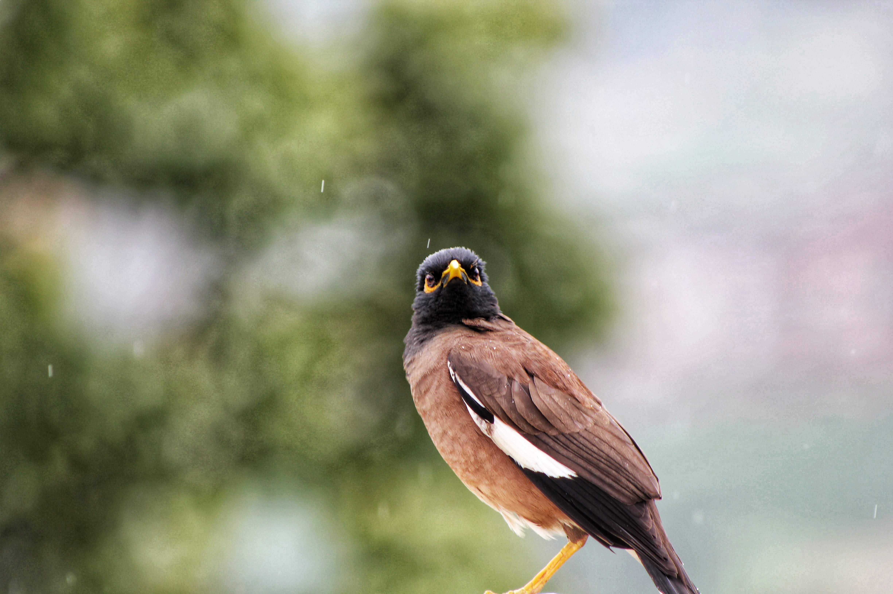
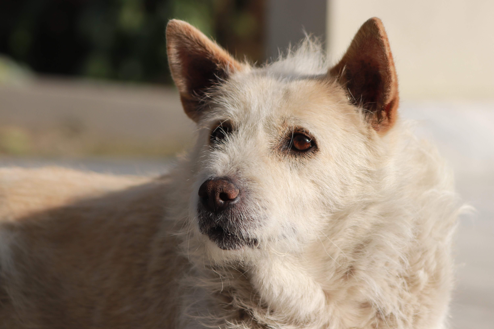
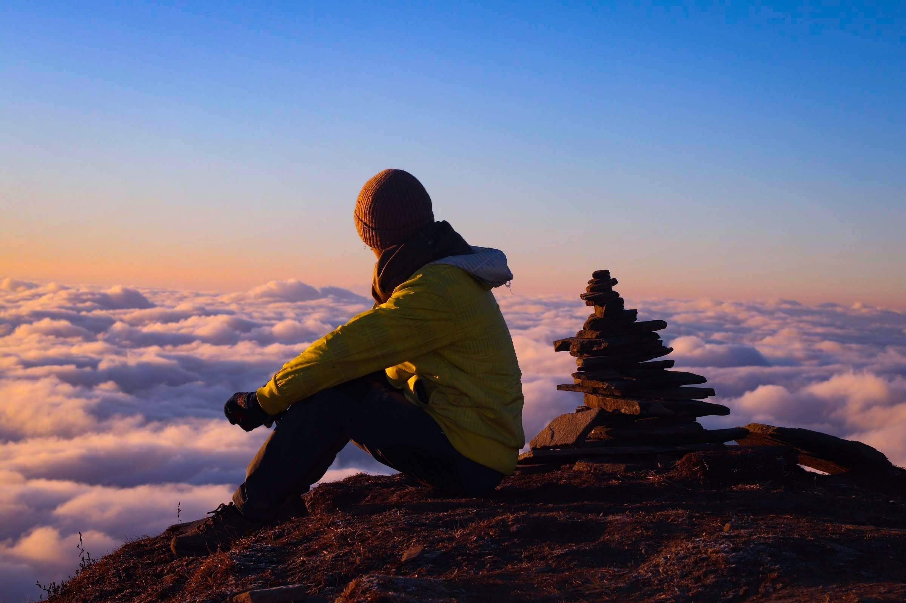
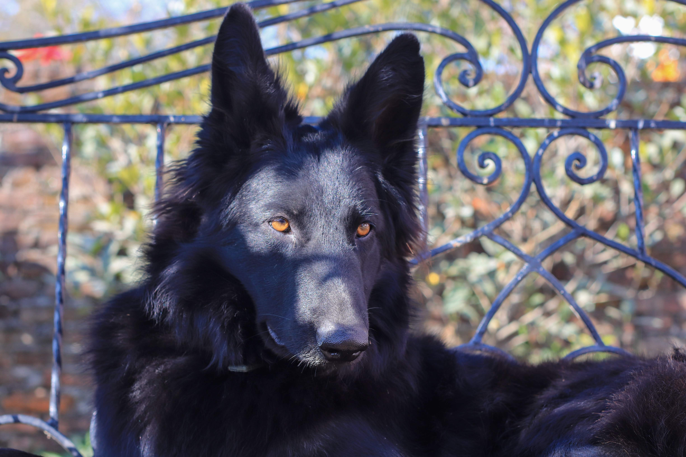
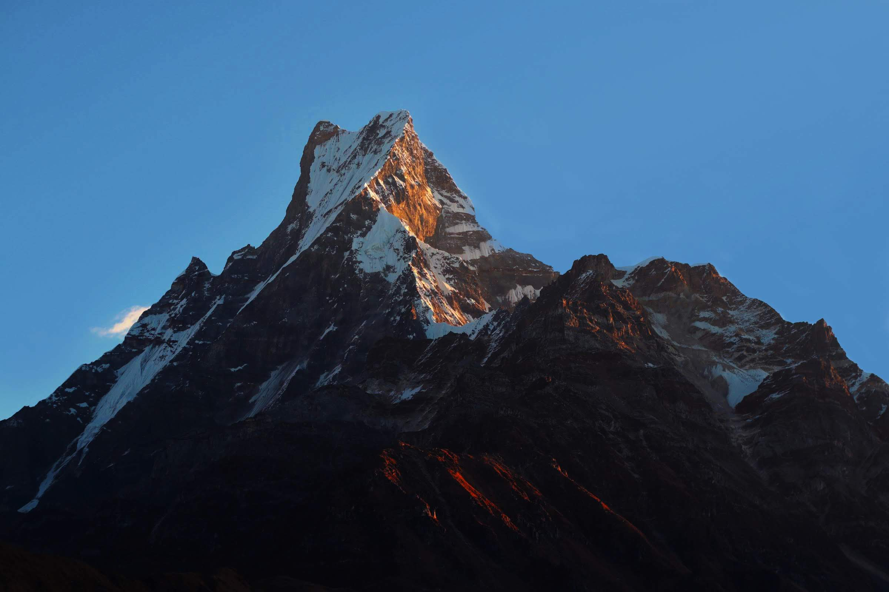
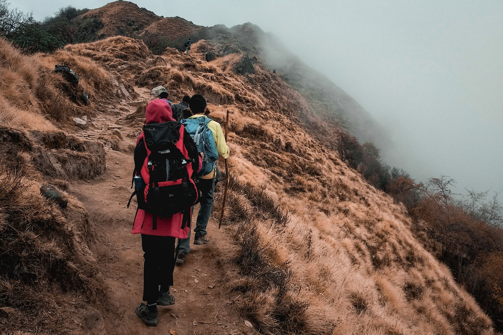

Visual explorations
In addition to my work as a UX designer, I am also an avid photographer. I love to capture beautiful moments and landscapes and use my photographs as a way to express myself creatively.





In addition to my work as a UX designer, I am also an avid photographer. I love to capture beautiful moments and landscapes and use my photographs as a way to express myself creatively.
Langtang Trek 2022
Random shots
In addition to my work as a UX designer, I am also an avid photographer. I love to capture beautiful moments and landscapes and use my photographs as a way to express myself creatively.




